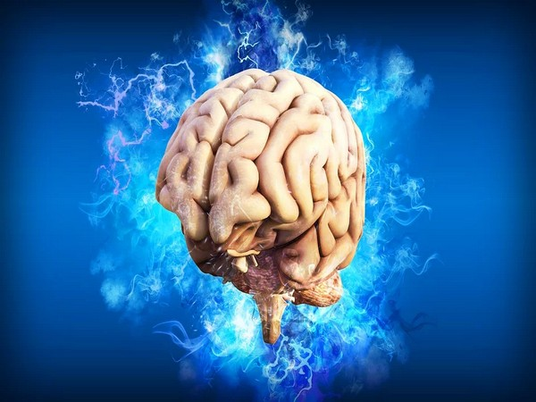

Traumatic Brain Injury

SYMPTOMS:
TBI symptoms vary depending on how severe the injury is. A key sign is loss of consciousness (passing out) after a blow. Some people feel dazed for a couple of minutes and others are unresponsive for long periods (coma or persistent vegetative state).
People with mild TBIs can have several different symptoms, most of which occur right after the head injury or the days following. Sometimes people do not feel the severity of a symptom until they return to school or work.
- Behavior or mood changes.
-
Confusion or memory problems.
-
Convulsions or seizures.
-
Dilated pupils or blurred vision.
-
Dizziness, fainting or fatigue.
-
Headaches.
-
Nausea and vomiting.
-
Restlessness or agitation.
-
Sensitivity to light and smell.
-
Sleeping too much or too little.
-
Slurred speech.
CAUSES
When you take a violent, hard hit to your head, your brain may experience changes in chemical and energy use as a way to compensate for the injury. These changes can result in headaches, light/sound sensitivity, and confusion. In mild TBIs, these changes are short and do not permanently damage the brain. However, with more severe injuries, these changes can last longer and result in damage to the brain cells. These effects can cause the brain to swell and expand inside the skull. The swelling can lead to even more brain damage.
DIAGNOSIS
Your healthcare provider will examine you and ask about your symptoms. They will also want to learn more about what caused the injury. Depending on the severity of the injury and symptoms, you may have:
- Neurological evaluation: A neurologist (specialist in the brain) checks your memory, thinking, motor function (balance, reflexes and coordination) and sensory functions (hearing and vision).
-
Imaging tests: A CT scan or MRI checks for brain bleeding and swelling.
-
Blood test: The Banyan Brain Trauma Indicator™ (BTI) looks for proteins in your blood that indicate concussion or mild TBI.
TREATMENT
For all TBI grades, treatments may include:
- Counseling for emotional support. Many individuals experience stress and worries about their recovery. They may find that it is more difficult to get back to their work and hobbies than anticipated. Therefore, counseling is often very helpful in conjunction with other medical treatments.
-
Surgery to treat bleeding in the brain (intracranial hemorrhage) or reduce pressure from brain swelling.
-
Rehabilitation, including physical, occupational and speech therapy.
-
Rest. Talk to your doctor about how long to rest after a TBI. Depending on the type of TBI, some may need to rest for 1 to 2 days before going back to their typical activities. More severe head injuries may require longer periods of rest.
-
Return to typical activities. For milder head injuries, sometimes if people rest for too long after their head injury, they may have more difficulty returning to work, school, and other activities like socializing and hobbies. For more severe injuries, returning to activities too soon can make symptoms worse. Talk to your doctor for specific recommendations.